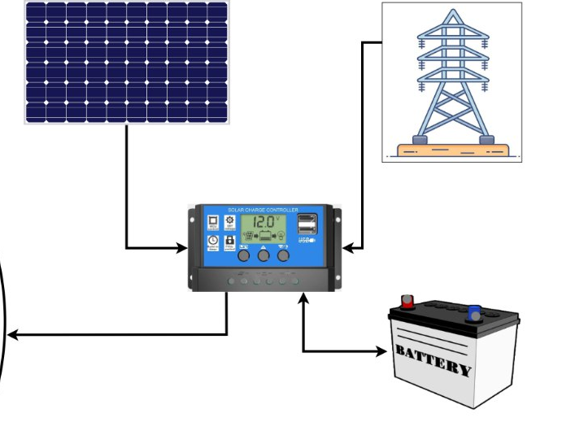

صندوق الترقية الذكي SDP Retrofit Kit: عتاد صناعي مصمم لبيئة الصحراء
بدلاً من تكبيد الفلاح مئات الملايين لشراء محور جديد، صممنا وحدة أتمتة صناعية معيارية تركب مباشرة على لوحة قيادة أي محور رش قائم (Valley, Lindsay, Bauer, AFKO, AGM أو المحاور الحرفية بوادي سوف) خلال أقل من 4 ساعات عمل.

المواصفات التفصيلية للنسخة الميدانية المعتمدة (V1.0 Industrial)
مكتبة صور مكونات المنظومة (12 موضعاً مبرمجاً في الكود المصدري)
تم تجهيز كل بطاقة أدناه بصورتها التوضيحية ومسارها البرمجي الدقيق داخل مجلد assets/images/components/ بحيث يمكنك استبدال أو إضافة صورك الفوتوغرافية عالية الدقة مباشرة في الكود المصدري دون تعديل أي سطر HTML:

1. وحدة المعالجة (Edge Gateway)
لوحة Raspberry Pi 3 Model B+ في النموذج المخبري، وترتقي إلى ESP32-S3 PLC في النسخة الميدانية.

2. حساس رطوبة التربة (Soil Probe)
حساس YL-69 في النموذج الأولي، ومجس سعوي RS-485 يقيس الرطوبة والملوحة (VWC/EC) في الحقل.

3. حساس المناخ والحرارة (DHT-22)
يقيس درجة حرارة الهواء والرطوبة النسبية لحساب معامل البخر-نتح اللحظي ($ET_0$) في الحقل.

4. مقياس سرعة الرياح (Anemometer)
يرصد سرعة الرياح والزوابع الرملية لإيقاف الضخ آلياً عند تجاوز عتبة 45 كم/ساعة ومنع تطاير المياه.

5. حساس هطول الأمطار (Rain Sensor)
يكتشف الزخات المطرية المفاجئة لفصل مضخة الري فوراً وتفادي التشبع المائي وهدر الطاقة.

6. مضخة الضخ والتدفق (Water Pump)
تمثل وحدة الضخ المائي التي يتحكم فيها النظام عبر المرحلات ومغير السرعة التناسبي.

7. محرك دوران الأبراج (Drive Motor)
يتحكم في سرعة وزاوية دوران ذراع المحور لضبط كمية المياه الموزعة لكل قطاع زراعي (VRI).

8. حساس التموضع المغناطيسي (Proximity)
يحدد وصول ذراع المحور إلى نقاط البداية والنهاية وزوايا القطاعات بدقة عالية.

9. حساس الإشعاع الشمسي (Photocell LDR)
يرصد شدة السطوع الشمسي للتمييز بين ذروة الظهيرة الحارقة وفترات السقي الليلي عالي الكفاءة.

10. حساس الحماية من الحرائق (Flame Sensor)
يرصد أي اشتعال في المحاصيل الجافة (القمح والشعير وقت الحصاد) لتشغيل رشاشات الطوارئ وإرسال إنذار فوري.

11. منظومة التغذية الهجينة (Solar + MPPT)
اللوح الشمسي، منظم الشحن 12V/24V، والبطارية الاحتياطية مع التبديل الآلي للشبكة الكهربائية.

12. هيكل القاعدة المحورية (3D CAD Base)
التصميم الهندسي ثلاثي الأبعاد لقاعدة ارتكاز المحور وتمرير أنبوب المياه المركزي.
مقارنة المكونات بين النموذج المخبري (TRL 3) والنسخة الصناعية للصحراء (TRL 7)
| النظام الفرعي | النموذج الأولي الجامعي (TRL 3 — مخبر ورقلة) | النسخة الصناعية الميدانية (TRL 7 — SDP Retrofit Kit) | الفائدة التشغيلية في المزارع الصحراوية |
|---|---|---|---|
| وحدة المعالجة المركزية | Raspberry Pi 3 Model B+ (5V USB) | ESP32-S3 Industrial PLC + عزل ضوئي 380V | تحمل حرارة 60°C، استهلاك طاقة منخفض بـ 15 مرة، وإقلاع فوري (Real-time RTOS). |
| مجسات رطوبة التربة | حساس مقاومي YL-69 ثنائي القطب | مجس صناعي RS-485 Modbus (VWC + Temp + EC) | عدم تآكل الأقطاب بالأملاح الصحراوية وعمر افتراضي يفوق 5 سنوات في الحقل. |
| الربط اللاسلكي والاتصال | شبكة Wi-Fi محلية (مدى 30 متراً) | شبكة LoRaWAN (مدى 5 كم) + شريحة 4G LTE و SMS | تغطية كاملة لمحاور بمساحة 50–75 هكتار دون إنترنت أرضي أو كوابل طويلة. |
| التحكم في الدوران والضخ | محرك خطوي مصغر (Stepper Motor 5V) | تعشيق مباشر مع قواطع 380V AC ومغير السرعة VFD | توافق فوري مع محاور Valley و Lindsay و Bauer والمحاور المصنعة محلياً. |